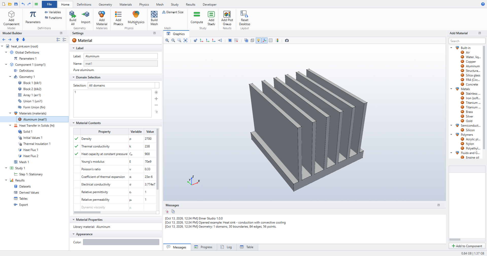
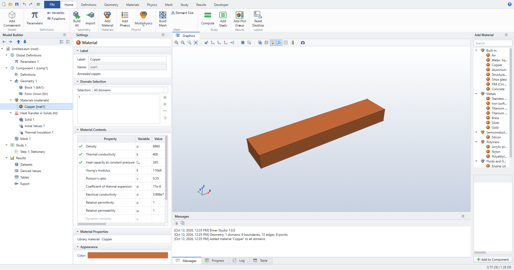

Materials
Adding a material
-
(or ) opens the Add Material window with the material library by category. Select a material and click Add to Component.
-
adds a material with no values, to fill in yourself.
The first material you add applies to all domains. Later materials start with an empty selection: click the domains they apply to. Where two materials share a domain, the lower one wins.

Material Contents
The Material Contents table lists every property with its symbol, value and unit. A green check marks the properties that the physics in the model need on this material’s domains. Properties without a value are greyed out.
Edit a value directly in the table. Values are SI unless you write a unit: 7850[kg/m^3], 200[GPa].

Properties as expressions
Any property can be an expression of parameters, coordinates, time and the dependent variables. For example:
| Property | Expression |
|---|---|
Thermal conductivity |
|
Electrical conductivity |
|
Density of a graded layer |
|
Measured data |
|
Elmer Studio translates such expressions into Elmer’s MATC code. When a property depends on the solution, the solver for that physics switches to nonlinear iteration.
| Library values are constants at 20 °C. COMSOL’s library has temperature-dependent data for many materials; here, enter an expression or an Interpolation function where the dependence matters. |
The library
The built-in library has 20 materials (air, water, metals, semiconductors, polymers, fluids and gases, concrete, …) with density, thermal and mechanical, electrical, magnetic and acoustic properties. The full list with values is in Reference › Materials.
Appearance › Color sets the colour the material has in the Graphics window.